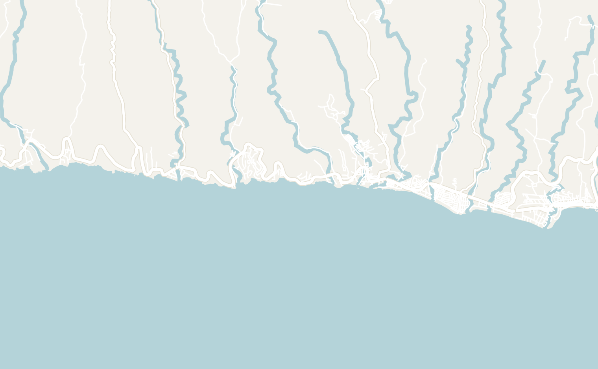
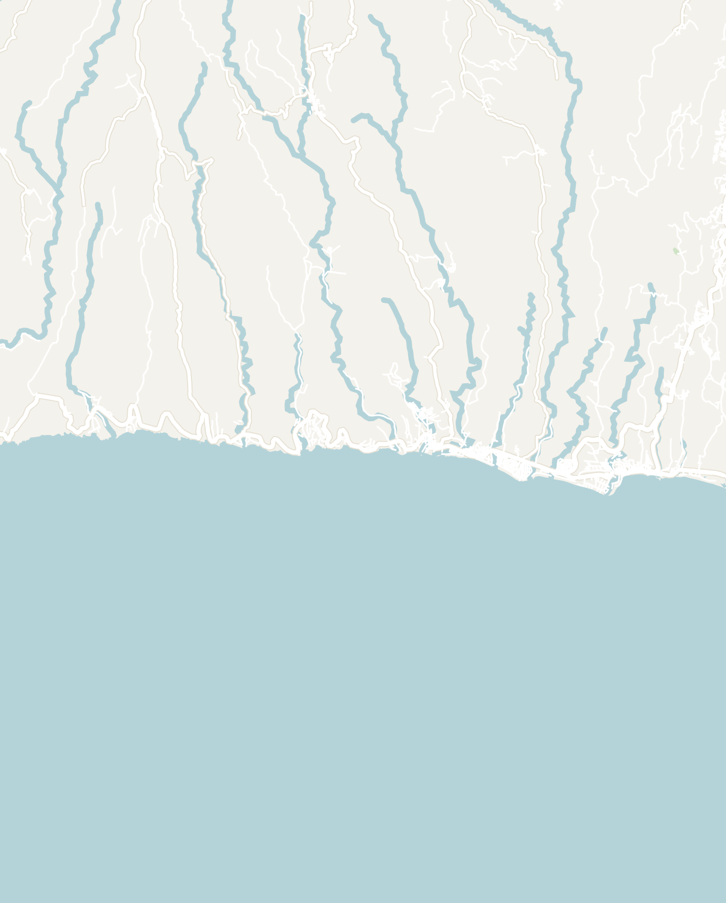

Overview

With sweeping black volcanic sand beaches and powerful Pacific swells, El Salvador's coastline around El Tunco and El Zonte has drawn crowds of surfers and backpackers for decades. I highly recommend spending a few days here for anyone looking for some sun, waves, cheap cold beers on the beach and one of the most vivid sunsets you'll ever see.
Less than an hour away from the airport and only a 40-minute drive end-to-end, this section of El Salvador's coast is extremely easy to access and explore. I've written in more detail about each of these towns later in the article, but here is an overview of the towns in the area:
- El Tunco - the most popular and developed town in the area, packed with surf schools, restaurants and nightlife (a bit more on the touristy side)
- El Zonte - a more laid-back option than El Tunco drawing more serious surfers and famously home to Bitcoin Beach
- Playa Shalpa (Taquillo) - a very quiet beach further up the coast for those looking for an "off-the-grid" feeling (my personal pick!)
- La Libertad - a larger town on the coast that is popular among locals and a common transit hub


Double-tap to open in Google Maps
Getting There
El Tunco is located about 1 hour from San Salvador, 40 minutes from the international airport or 2 hours from Santa Ana or La Ruta de las Flores. With so many transportation options, El Tunco is easily accessible from anywhere in the country. The proximity to the airport also makes the coast a convenient first or last stop in El Salvador.
- Bus — El Salvador has an extensive network of buses across the country which are extremely cheap and run frequently, making them a reliable option. El Tunco, in particular, is well connected to other popular tourist destinations like San Salvador, Santa Ana, Juayúa and the international airport. CentroCoasting is the best resource for bus schedules and connections in El Salvador
- Rideshare — Uber and inDrive are widely available ride-sharing apps in El Salvador with a ride from the airport to El Tunco, typically costing $15 to $25. This is the most convenient option if you're traveling with luggage
- Rental car — With the option to pick up from the airport, a rental car gives you the flexibility to explore the coast at your own pace and makes day trips much easier
- Tourist Shuttle — As the most popular area of El Salvador, there are many international shuttles connecting El Tunco to Guatemala, Nicaragua and Honduras. Ranging from $30 to $90 and offering pick-up and drop-off along the coast, this is a convenient way to incorporate El Salvador as part of a longer Central America trip
Once you're in El Tunco, all of the other towns on the coast are easily accessible by local chicken bus or Uber. The local chicken bus is a unique way to travel like a local. Luckily, there is one main highway connecting these towns so it is hard to get lost.
Which Town to Choose?
Each town on El Salvador's coast has its own personality. Generally, I would suggest spending 3 to 4 days in this area: 2 more lively days based out of El Tunco and 1 to 2 days relaxing in El Zonte or Playa Shalpa. The towns are very small and easily explored in just a day, but if you're surf-motivated, I met many backpackers who fell in love with surfing and got sucked into El Tunco for months.
El Tunco


El Tunco is the backpacker capital of El Salvador, a common stop for many on the "Gringo Trail" through Central America. For how popular it is, El Tunco is tiny: it is centered around a single main strip running down to the beach, lined with surf shops, hostels, open-air bars, and restaurants.
El Tunco has drawn surfers for decades, known for being one of the best surf spots in Central America. It has even earned the nickname Surf City, El Salvador. The beach itself is a stretch of black sand with strong and consistent waves. And then there are the sunsets, which are extraordinary. The combination of the black sand and the Pacific horizon makes for a spectacular way to close out each day (more on that later).
On the weekends, this small surf town floods with locals and tourists alike looking for a fun weekend of surfing and partying. It is by far the most developed and lively part of the coast, complete with nightlife, international cuisine, and plenty of activities. I would choose El Tunco if you're looking for the most lively experience on the coast.
El Zonte
El Zonte is El Tunco's quieter, more relaxed neighbor. Located about 10 minutes down the coast, it has a smaller, more intimate feel with fewer tourists and fewer bars. If you're looking for a quieter base with fewer crowds, El Zonte is an excellent choice. It's an easy trip to El Tunco for nightlife and then return for a peaceful night's sleep.
El Zonte is also known as the world's first Bitcoin Beach, a community experiment that aimed to turn the village into a fully functioning Bitcoin economy. In 2021, El Salvador actually became the first country to adopt Bitcoin as a legal currency. Although the Bitcoin buzz has died down since then, many local businesses still accept Bitcoin (an interesting quirk of El Salvador's coast).
I didn't visit El Zonte, but I met many others who stayed there and absolutely loved it. If you want to do more research, here is an article that goes into depth about the town.
Playa Shalpa (Taquillo)


Located only half an hour further up the coast, Playa Shalpa feels a world away from El Tunco. If you're in search of a true "off the grid" feeling, Playa Shalpa may be the place for you.
Feeling exhausted from a crazy couple of days in El Tunco, I decided to join my Canadian friend to come to Playa Shalpa to relax. I took an Uber north up the main road where I was dropped off on a dirt road (picture above) which was the entrance to Playa Shalpa. At first, I was a bit disoriented by the local security guard who asked for my passport at the entrance of the dirt road and checked me in.
I walked another 800 meters along an El Salvadoran dirt road, with little signage, to finally arrive at my accommodation called El Rancho de Don Moncho. The worker was lazily lounging in a hammock, watching "fútbol" on his phone when I rudely disturbed him to check-in. He was moving on island time when he checked me in and his mom made lunch for us. There was only 1 other guest in my hotel the whole time I was there.
The hotel was no-frills, but had a direct staircase right down to the black sand beach below. The whole area was nestled in a small cove with cliffs on both sides covered in palm trees. It was the most serene stop on my trip. No noises from modern technology, cars, or even street lights, only the sound of birds and the ocean. I fell asleep to the sound of waves crashing that I could hear from my room. I felt like I was sleeping on the beach.
It is also home to Lagarza Hostel which was an upscale hostel with an infinity pool, excellent restaurant and even ocean views from the bunks. I highly recommend Playa Shalpa for those looking for a secret getaway to relax for a day or two.
What to do
This section was especially easy to write since there are basically 3 things to do in El Tunco: surf, relax and party.
Surfing

The main draw to El Tunco is its famous surf breaks, known to be some of the best in Central America. The waves are so well-known, they even have names like La Punta, La Bocana and K59. I met many people who spent a few weeks to a few months surfing in El Tunco.
The Salvadoran Coast offers opportunities to surf for all levels (particularly in El Tunco or El Zonte). There is no shortage of surf schools for beginner and intermediate surfers looking to spend anywhere from a single day to a full week surf camp. Here are a couple options (Sunzalito Surf School & Lapoint Surf Camp), but there are plenty of schools lined up by the beach so you'll have no problem finding a surf instructor.
If you're basing your trip around surfing, here are the times of the year where it would be best to go:
- March to October (wet season) – Peak swell season, waves consistently overhead, best for advanced surfers.
- November to February (dry season) – Smaller swells, cleaner conditions, best for beginners and intermediates.
I'll be honest, surfing is not my expertise so I'll leave it to the experts who wrote the Complete Surfer's Guide to El Salvador if you want to do more research.
Watch the Sunset & Admire El Tunco Rock


There's something special about the sunsets on Central America's Pacific Coast. The sunsets burn a dark orange color, different from anywhere else I've been. The whole town slowly gathered on the main beach to admire the sunset starting 30 minutes before. I also saw a bunch of surfers trying to catch some final waves for the day.

Fun fact: the town of El Tunco is actually named after the giant black rock located right off the main beach. "El Tunco" is local Salvadoran slang for the pig. It's supposed to resemble a pig lying down in the ocean, but I'll let you be the judge of that...
Nightlife
El Tunco, in particular, is known to be the best place for nightlife in El Salvador. During the weekend, locals from all over El Salvador and tourists alike flood the town. So much so that all the hotels and hostels completely fill up in all the nearby towns.
There are plenty of bars around El Tunco, but the entire town somehow ends up at Kako's Gastrobar. Located right off the main beach, this is a massive open-air bar with a top level overlooking the dance floor. It has a very beachy feel and is the best place in town to get your fix of reggaeton.
Other Activities
There are plenty of other activities that you can do on El Salvador's coast. Here are some that I didn't have time to experience. However, I've included links to other guides for further research:
- Taminique Waterfalls (Day Trip) - located only 30 minutes from El Tunco, this short hike allows you to visit four different waterfalls. After doing the 7 Waterfalls Hike in Ruta de las Flores (which I wrote about here), I decided to spend more time at the beach instead
- Yoga Retreats and Classes - the coast is also home to many yoga retreats and daily classes. Available in both El Tunco and El Zonte, many places like to offer a mix of surfing and yoga retreats
Where to Eat
There were many amazing places to eat in both El Tunco and Playa Shalpa. Being more heavily touristed, El Tunco had a large selection of western food, which sometimes is a nice break from eating local cuisine. Unsurprisingly, El Tunco was also the best place to get seafood in El Salvador.
El Tunco
- Sabor Costeño - located right outside the main town, Sabor Costeño was a lovely family-run establishment with great seafood. This was hands-down my favorite meal in El Salvador! To this day, I don't quite know what I ordered, but it came out as a seafood medley with a cream sauce. They offer a wide variety of seafood and local Salvadoran dishes

- Dale Dale Cafe - a casual restaurant offering both Salvadoran and western food, situated conveniently on the main strip of El Tunco and a few steps away from the beach
- Point Break Cafe - a small cafe serving a variety of bagels and coffee. A great option if you're looking for a break from local cuisine
Playa Shalpa
Playa Shalpa has much more limited restaurant options than El Tunco, mainly due to how undeveloped the area is. However, the food at Lagarza Hostel was amazing. I recommend their Salvadoran breakfast and crispy fish tacos. For a more local option with fresh, made-to-order pupusas, visit the nearby pupuseria run by a mother and her daughter, just off the main highway.


Places to Stay
El Salvador's coast offers a wide range of accommodation options, from budget dorm rooms to mid-range boutique hotels. Most options are within walking distance of the beach.
Be warned: if you're a last-minute planner like me, El Tunco is incredibly small and the area books up quickly on the weekends. I booked my accomodation two days in advance and there were only 2 hostel beds and no hotel rooms available in El Tunco.
El Tunco
- Canuck's Guest House - I stayed at this hostel for the majority of my time in El Tunco. The owner was a very friendly Canadian who has lived in El Salvador for years. It was a fine but very basic hostel experience
- Dos Palmas - a wonderful newer hostel in El Tunco. Unfortunately, it was completely booked when I was in town. However, it was gorgeous when I visited with modern dorms and relaxing outdoor pool
- Vibes Wellness House - half gym and half hostel! Funnily enough, the price of the day pass was almost equal to the price of a night stay
- Salty Dogs Hostel - located closer to La Libertad and away from El Tunco, this upscale hostel is a magnet for more serious surfers
Playa Shalpa
- Lagarza Hostel - a gorgeous hostel complete with an infinity pool, deck overlooking the ocean and a stellar restaurant. I spent a whole afternoon hanging out there and wish I had booked a night. Despite its remote location, the staff was very friendly and organized a lot of tours and activities


- El Rancho de Don Moncho - the no-frills hotel I stayed at in Playa Shalpa. With a private staircase to the beach, it was a quiet and relaxing place, with only one other guest while I was there!